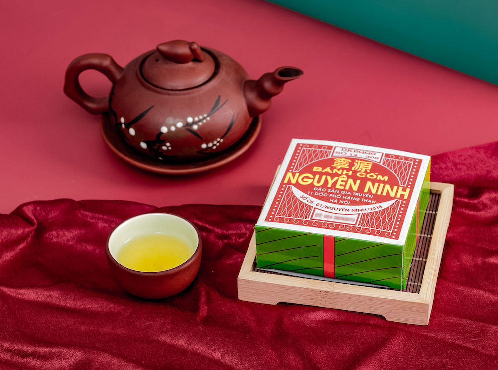
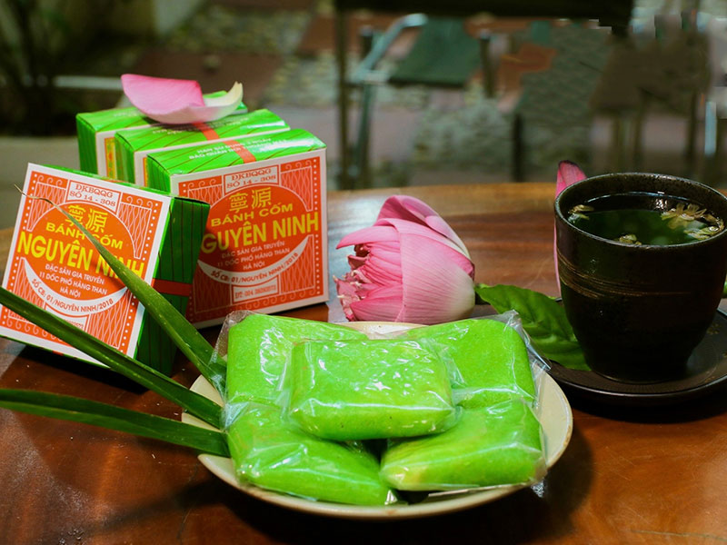

Khách hàng tại Hà Nội
Bánh thơm, mềm dẻo, nhân vừa miệng. Đóng gói sạch sẽ và giao hàng nhanh.




Hiệu bánh cốm Nguyên Ninh mang trong mình hương vị đặc trưng của Hà Nội. Từ những hạt cốm xanh tuyển chọn kết hợp cùng nhân đậu xanh thơm bùi, mỗi chiếc bánh có vị dẻo thơm, ngọt thanh, mộc mạc mà tinh tế.
Trải qua nhiều năm gìn giữ nghề làm bánh, Nguyên Ninh vẫn là món quà được nhiều người nhắc nhớ khi tìm về hương vị Hà Nội. Bánh được chuẩn bị cẩn thận, làm mới và đóng gói chỉn chu để thưởng thức hoặc dành tặng người thân.
“Hương vị Hà Nội
trong từng món quà”
Đang tải sản phẩm…
Đang tải sản phẩm…
Đặt số lượng lớn có ưu đãi
Bánh thơm, mềm dẻo, nhân vừa miệng. Đóng gói sạch sẽ và giao hàng nhanh.
Mẫu bánh đẹp, hương vị truyền thống. Cửa hàng tư vấn nhiệt tình và dễ đặt hàng.
Sản phẩm được chuẩn bị cẩn thận, đủ số lượng và giao đúng thời gian.

Bánh cốm dẻo thơm rất hợp dùng cùng trà nóng, giúp cân bằng vị ngọt và làm nổi bật hương cốm.

Lớp vỏ cốm xanh mềm dẻo kết hợp nhân đậu xanh thơm bùi tạo nên món quà thanh nhã.
Khách hàng có thể đặt bánh dùng hằng ngày, làm quà hoặc chuẩn bị cho cưới hỏi và dịp lễ.
Hộp bánh được đóng gói cẩn thận, phù hợp dành tặng người thân, bạn bè và đối tác.
Chuyên bánh cốm, bánh phu thê, bánh xu xê và các món quà mang hương vị Hà Nội. Nhận đặt bánh ăn tiệc, hội nghị, cưới hỏi và làm quà biếu.
🌿 Sản phẩm có sẵn số lượng lớn | Giao hàng nhanh tận nơi | Chú trọng chất lượng 🌿
⌂ Địa chỉ: Số 11 Hàng Than, Phường Nguyễn Trung Trực, Hà Nội
🌐 Website: banhcomnguyenninh.github.io/banh-com-nguyen-ninh/
☎ Hotline: 0985 868 317